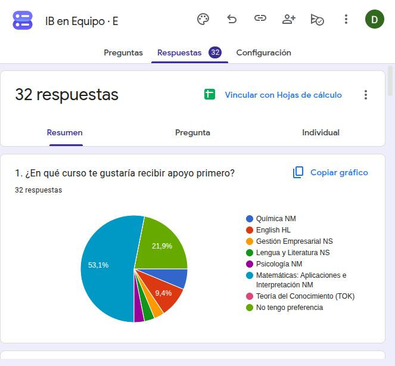
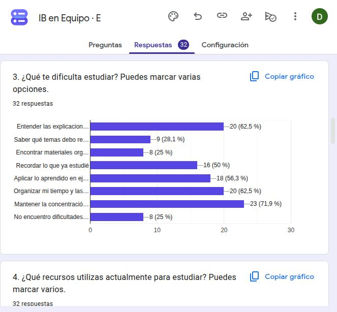
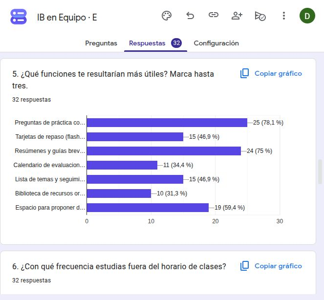
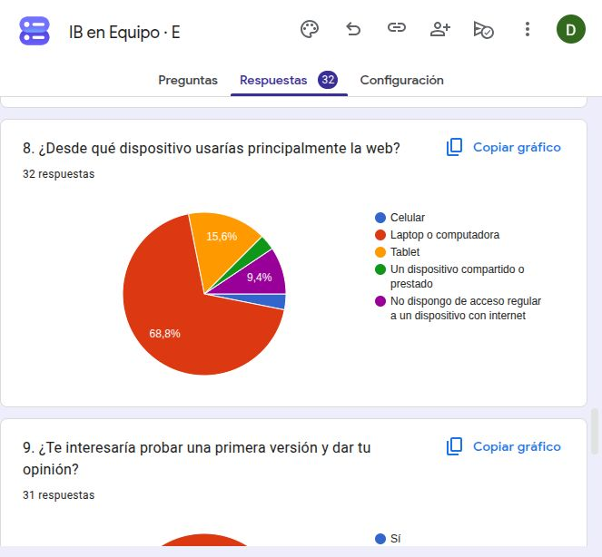
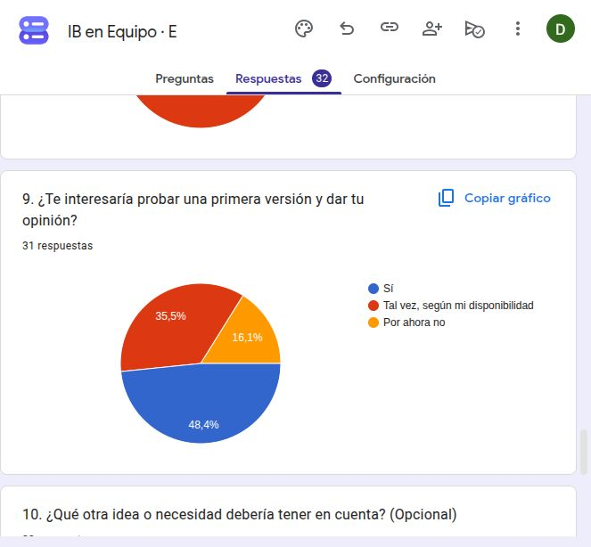
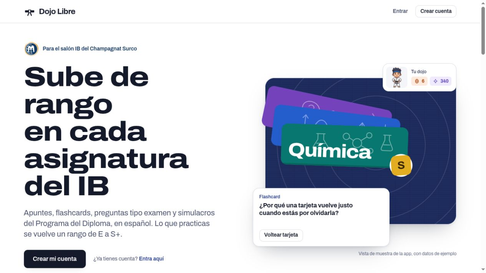

Creatividad Servicio
Inicio del proyecto: . Actualización: . La encuesta ya cuenta con respuestas y la web está disponible en ib.paraclases.com. Aquí documentamos el proceso y las mejoras que siguen pendientes.
1. Investigación: escuchar al salón
El proyecto comenzó el 4 de octubre de 2026 con el propósito de apoyar el estudio de los cursos del IB. Nuestra comunidad inicial es 4.º A. Para orientar el desarrollo y las mejoras de la web, recogimos necesidades, hábitos de estudio y preferencias mediante una encuesta.
La propuesta reúne materiales por curso y herramientas de repaso activo. El 5 de noviembre revisamos 32 respuestas y contrastamos sus prioridades con la versión pública de Dojo Libre. Los resultados orientan el siguiente ciclo de mejoras; todavía no demuestran un impacto en el aprendizaje.
Encuesta inicial · 32 respuestas al 5 de noviembre
¿Cómo podemos estudiar mejor en 4.º A?
Encuesta de 10 preguntas sobre cursos, temas difíciles, hábitos de estudio y funciones útiles. Tiempo estimado: 3–4 minutos. No solicita nombres, correos ni notas.
Responder en Google FormsParticipación voluntaria. El formulario no solicita nombres, correos ni notas. Las respuestas abiertas mencionan también otros salones; por ello, no atribuimos las 32 respuestas exclusivamente a 4.º A ni afirmamos que correspondan a 32 personas distintas.
Cómo usaremos los resultados
- Identificar los cursos y temas con mayor demanda de apoyo.
- Elegir hasta tres funciones prioritarias para la primera versión.
- Adaptar el diseño a los dispositivos y al tiempo de estudio del salón.
- Invitar a compañeros interesados a probar la web y comentar sus dificultades.
Lo que aprendimos de la encuesta
Corte de análisis: 5 de noviembre de 2026. Los recuentos proceden del resumen de Google Forms. Las preguntas obligatorias tienen 32 respuestas; la pregunta sobre el piloto tiene 31. Las selecciones múltiples pueden superar el 100 %.
| Hallazgo | Dato observado | Mejora propuesta |
|---|---|---|
| Matemáticas concentra la demanda inicial | 17/32 · 53,1 % | Priorizar trigonometría, geometría, superficie y volumen, y ecuación de la recta; temas mencionados en las respuestas abiertas. |
| Práctica con explicaciones y guías | Preguntas: 25/32 · 78,1 %. Resúmenes: 24/32 · 75 %. | Revisar que los ejercicios expliquen los pasos, los errores habituales y el tema que conviene repasar, junto con una guía breve. |
| Dudas y estudio con compañeros | 19/32 · 59,4 % | Preparar un canal para proponer dudas por curso y acordar cómo revisarlas y responderlas en equipo. |
| Concentración, comprensión y organización | Concentración: 23/32 · 71,9 %. Comprensión: 20/32 · 62,5 %. Tiempo: 20/32 · 62,5 %. | Probar sesiones con una meta concreta, explicaciones sencillas y un plan de repaso ajustable. |
| Acceso principalmente desde computadora | 22/32 · 68,8 %. 3/32 sin acceso regular a un dispositivo con internet. | Comprobar teclado, computadora, tablet y celular; valorar guías imprimibles para facilitar el acceso. |
| Interés en probar la web | Sí: 15/31 · 48,4 %. Tal vez: 11/31 · 35,5 %. | Invitar en clase a voluntarios y registrar tareas, dificultades y cambios. El interés declarado todavía no equivale a una prueba realizada. |
Alcance y comprobaciones pendientes de los datos
La encuesta es exploratoria y voluntaria. No registró la sección ni identificadores, de modo que no permite verificar personas únicas o representar a todo el salón. Publicamos resultados agrupados y sintetizamos las sugerencias pertinentes sin reproducir nombres ni comentarios personales.
La pregunta 5 indica «Marca hasta tres», pero sus recuentos suman 119 selecciones, por encima de las 96 que resultarían de 32 respuestas con un máximo de tres. Conservamos los datos originales y usamos la frecuencia de selección como orientación; antes de otra ronda conviene revisar la validación. La causa de esta diferencia no está comprobada.
También aparecieron sugerencias de incluir otros salones, conectar calendarios y añadir Historia. Se valorarán con el equipo; no forman parte del alcance confirmado de siete cursos y áreas.
2. Preparación: objetivos y alcance
Objetivo general
Diseñar, desarrollar y probar de forma colaborativa una web gratuita de apoyo al estudio para los alumnos de 4.º A, que organice recursos de sus cursos del IB y facilite el repaso a partir de las necesidades identificadas en la encuesta.
Objetivos específicos
- Recoger y analizar las necesidades del salón antes de cerrar el diseño.
- Crear una navegación clara para los siete cursos y áreas, usable en celular y computadora.
- Preparar un primer tema de repaso por curso, con recursos propios o autorizados, fuentes identificadas y contenido revisado por el equipo.
- Implementar las funciones prioritarias y realizar una prueba con al menos cinco compañeros voluntarios, según su disponibilidad.
- Registrar el trabajo cada semana y realizar al menos dos ciclos de comentarios y mejoras antes del cierre.
La encuesta ya fue analizada y la web tiene una versión pública. La revisión de los materiales, las pruebas con compañeros y los dos ciclos de mejoras siguen como metas por documentar. Ajustaremos el contenido al calendario escolar y a la disponibilidad del equipo.
Cursos y áreas incluidos
Química
NM · Nivel MedioEnglish
HL · Higher LevelGestión Empresarial
NS · Nivel SuperiorLengua y Literatura
NS · Nivel SuperiorPsicología
NM · Nivel MedioMatemáticas: Aplicaciones e Interpretación
NM · Nivel MedioTeoría del Conocimiento
TOK · Componente troncalLa portada actual de Dojo Libre presenta seis asignaturas y el núcleo del Diploma. Verificaremos con los profesores que los temas y niveles correspondan a lo trabajado en clase.
Prioridades para la siguiente versión
- Repaso por tema: preguntas de práctica, respuestas explicadas y tarjetas de repaso.
- Organización: lista de temas, seguimiento del repaso y fechas de evaluación.
- Recursos compartidos: resúmenes, guías y enlaces ordenados por curso.
Las tres prioridades señaladas por la encuesta son preguntas explicadas, resúmenes breves y apoyo entre compañeros. En TOK adaptaremos los recursos a preguntas de conocimiento, perspectivas y argumentación.
Equipo de trabajo
Integrantes: Dylan Díaz, Diego Chinen y Aitana Castagnola. El proyecto se organiza entre los tres integrantes. El reparto indicado abajo es una propuesta de trabajo y se ajustará con el equipo; no acredita tareas ya realizadas.
Dylan Díaz
Coordinación del desarrollo y diseño de la web, organización de las versiones y documentación técnica.
Diego Chinen
Coordinación de los materiales por curso, organización de los comentarios de los compañeros y seguimiento de las pruebas.
Aitana Castagnola
Participante del proyecto. Su responsabilidad específica y sus entregables se acordarán con el equipo y se registrarán en la bitácora.
Cada integrante mantendrá su propio registro de aportes y reflexiones CAS. Pediremos orientación al coordinador CAS y, cuando sea posible, a los profesores de los cursos.
Recursos previstos
- Computadora, acceso a internet y celulares para comprobar la experiencia de uso.
- Google Forms para la encuesta y una hoja de cálculo para analizar resultados agrupados.
- Dojo Libre en ib.paraclases.com como web de estudio y este blog CAS para documentar el proceso.
- Apuntes propios, materiales autorizados y fuentes educativas identificadas.
Presupuesto inicial previsto: S/ 0, usando recursos disponibles y herramientas gratuitas. Revisaremos cualquier necesidad adicional antes de asumir un gasto.
Cronograma: desde el 4 de octubre
Inicio: 4 de octubre de 2026. Este cronograma reúne los hitos documentados y propone el siguiente trabajo hasta el 14 de noviembre. Las fechas de pruebas y cierre podrán ajustarse con los tres integrantes.
| Fecha | Actividad | Participación | Estado / evidencia |
|---|---|---|---|
| 4 oct. | Inicio del proyecto IB en Equipo. | Fecha de inicio comunicada por Dylan. | Inicio registrado. Falta añadir la evidencia de la primera reunión o actividad. |
| 4–28 oct. | Reconstruir la bitácora de ideas, reuniones y avances de este periodo. | Cada integrante documentará sus aportes y su fecha de incorporación. | Por documentar con fechas, notas, fotos o versiones disponibles. |
| 29 oct. | Registro de la planificación inicial y preparación de la encuesta de necesidades. | Propuesta inicial con Dylan y Diego. | Plan y formulario disponibles. |
| 5 nov. | Analizar 32 respuestas, registrar a Aitana en el equipo y revisar la portada pública de Dojo Libre. | Dylan, Diego y Aitana como equipo actual; reparto específico por acordar. | Resultados agrupados, capturas y prioridades documentados en este blog. |
| 6–7 nov. | Acordar tareas y revisar los ejercicios y guías de Matemáticas que se usarán en el piloto. | Dylan: desarrollo; Diego: materiales; tarea de Aitana por acordar. | Previsto: lista de tareas, contenidos revisados y criterios de prueba. |
| 8–10 nov. | Primera prueba con al menos cinco voluntarios y ajustes según sus dificultades. | Equipo y compañeros voluntarios. | Previsto: registro de tareas y primer ciclo de mejoras. |
| 11–13 nov. | Segunda prueba de los cambios y comparación con la versión anterior. | Dylan, Diego y Aitana, según el reparto acordado. | Previsto: comentarios, capturas comparativas y segundo ciclo de mejoras. |
| 14 nov. | Revisar metas, presentar la web y escribir las reflexiones individuales; ampliar el plazo si hace falta. | Dylan, Diego y Aitana. | Previsto: demostración y evaluación del proceso con evidencias reales. |
3. Acción: desarrollar, probar y mejorar
Estado: web disponible y mejoras por validar. La versión pública se llama Dojo Libre. Su portada presenta apuntes, flashcards, preguntas, simulacros y un cuaderno de errores. Esta revisión confirma lo que muestra la portada; aún falta documentar pruebas de uso con compañeros y comprobar los contenidos dentro de las cuentas.
El siguiente paso es contrastar esas herramientas con las prioridades de la encuesta: Matemáticas, explicaciones claras, resúmenes y apoyo entre compañeros. Registraremos cada cambio y la dificultad que busca resolver.
Cómo sabremos si avanzamos
- Los siete espacios de cursos estarán accesibles y sus recursos iniciales tendrán fuentes identificadas.
- Los participantes del piloto intentarán encontrar un tema, usar un recurso y realizar una actividad de repaso.
- Recogeremos qué tareas pudieron completar, qué les confundió y qué consideran útil.
- Compararemos las versiones y anotaremos qué cambios surgieron de sus comentarios.
La evaluación se centrará en la utilidad y facilidad de uso de la herramienta. Los resultados se describirán con los datos que realmente obtengamos.
Resultados de aprendizaje que busco demostrar
Iniciar y planificar una experiencia CAS
Investigaré las necesidades del salón, justificaré las decisiones de diseño y organizaré los objetivos, recursos, tareas y tiempos con Diego y Aitana.
Evidencias disponibles: encuesta, análisis de 32 respuestas y cronograma actualizado. Faltan los bocetos y el registro de decisiones del equipo.
Compromiso y perseverancia
Mantendré un trabajo regular, registraré las dificultades y revisaré la web a partir de las pruebas y de los comentarios recibidos.
Evidencias previstas: bitácora semanal, versiones, problemas resueltos y ajustes entre pruebas.
También buscaremos reforzar RA5 mediante la colaboración. Las habilidades nuevas podrán aportar a RA2, y el cuidado de las fuentes y de los datos a RA7, según las decisiones y evidencias que surjan.
Los resultados se irán demostrando con acciones y reflexiones individuales. Su cumplimiento se revisará con el coordinador CAS.
4. Reflexión durante el proceso
Nuestro propósito inicial es aprender a convertir las necesidades del salón en una herramienta útil, organizarnos como equipo y sostener el proyecto mientras atendemos nuestras responsabilidades escolares.
Preguntas para la bitácora semanal de cada integrante
- ¿Qué hice esta semana y cuál fue mi aporte concreto?
- ¿Qué dificultad encontré y cómo intenté resolverla?
- ¿Qué aprendí de los comentarios de mis compañeros?
- ¿Qué decisión tomamos juntos y por qué?
- ¿Qué cambiaré o continuaré la próxima semana?
La encuesta ofrece una primera base para decidir. Cada integrante añadirá su reflexión personal sobre lo que hizo, las dificultades y lo aprendido. El impacto se evaluará después de las pruebas.
5. Evidencias del proceso
Estas capturas documentan la investigación inicial y la versión pública de la web. Se conservan los gráficos originales de Google Forms; las respuestas abiertas se presentan únicamente como una síntesis de necesidades, sin nombres ni comentarios personales.

01 · Cursos prioritarios
Matemáticas AI NM obtuvo 17 de 32 respuestas (53,1 %). Esta evidencia orienta el primer bloque de contenidos.
Captura del 5 de noviembre de 2026 · Abrir imagen para ampliar
02 · Dificultades para estudiar
La concentración o motivación aparece en 23 de 32 respuestas; comprender conceptos y organizar el tiempo, en 20 cada una.
Captura del 5 de noviembre de 2026 · Abrir imagen para ampliar
03 · Funciones solicitadas
Preguntas explicadas: 25; resúmenes: 24; dudas y estudio con compañeros: 19. La nota metodológica explica la comprobación pendiente del máximo de selecciones.
Captura del 5 de noviembre de 2026 · Abrir imagen para ampliar
04 · Dispositivos y acceso
22 respuestas indican laptop o computadora y 3 señalan falta de acceso regular a un dispositivo con internet.
Captura del 5 de noviembre de 2026 · Abrir imagen para ampliar
05 · Interés en el piloto
De 31 respuestas, 15 dicen sí y 11 tal vez. Todavía falta convocar y realizar las pruebas.
Captura del 5 de noviembre de 2026 · Abrir imagen para ampliar
06 · Versión pública de Dojo Libre
Captura de ib.paraclases.com al 5 de noviembre. Los valores de racha y XP de la portada son datos de muestra de la app, no resultados de participantes.
Captura del 5 de noviembre de 2026 · Abrir imagen para ampliar- DisponiblePlanificación inicial, encuesta y cronograma actualizado.
- Analizada32 respuestas recibidas y prioridades para la próxima versión.
- DisponiblePortada pública de Dojo Libre y captura de su estado actual.
- PendienteFoto del equipo, reparto acordado y bitácora de aportes.
- PendientePruebas con compañeros, comparación de versiones y reflexiones individuales.
La encuesta documenta necesidades e interés; no mide una mejora de notas o aprendizaje. El cumplimiento de los resultados CAS se revisará con las acciones y reflexiones de cada integrante.